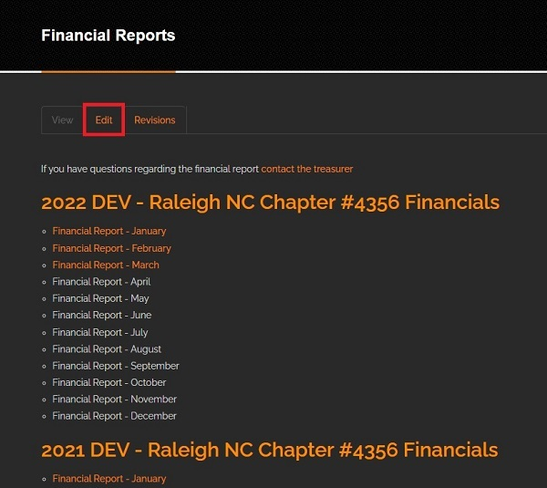
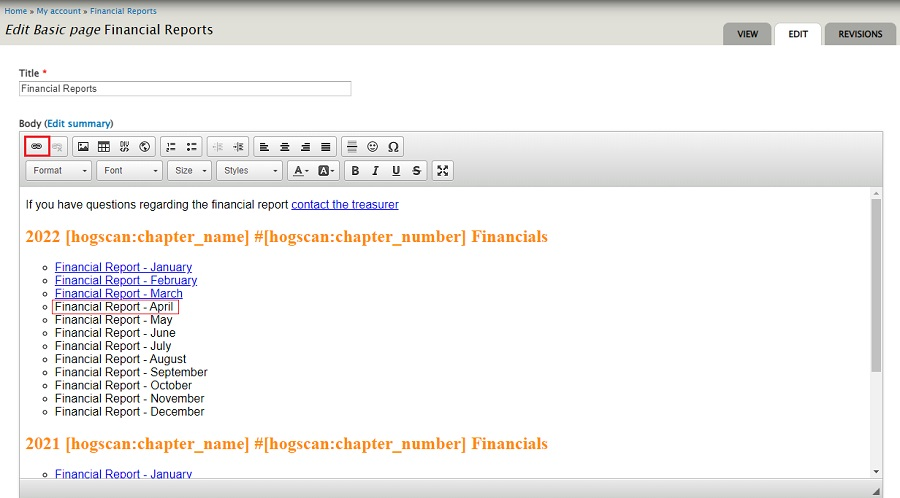
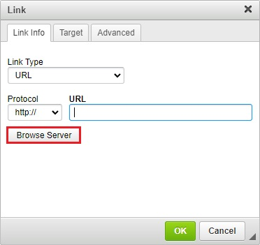
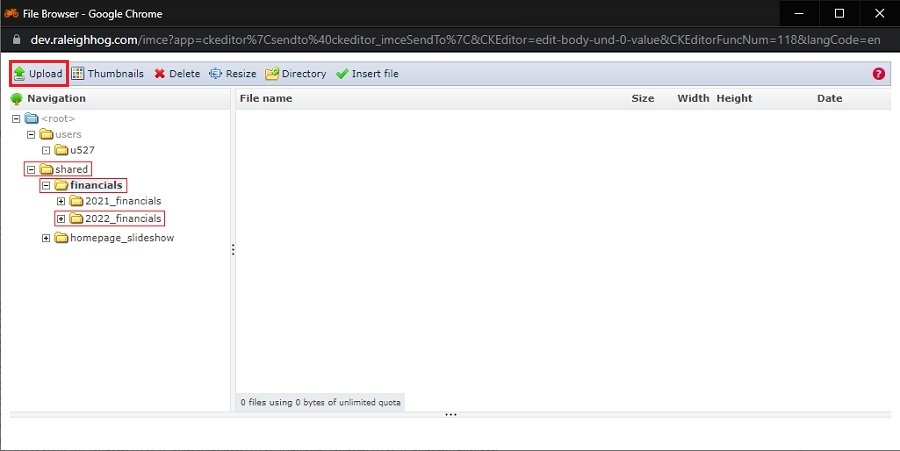
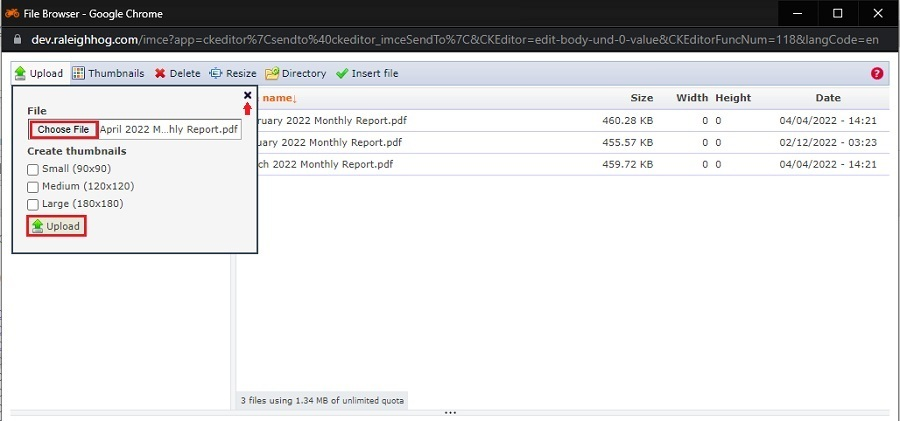
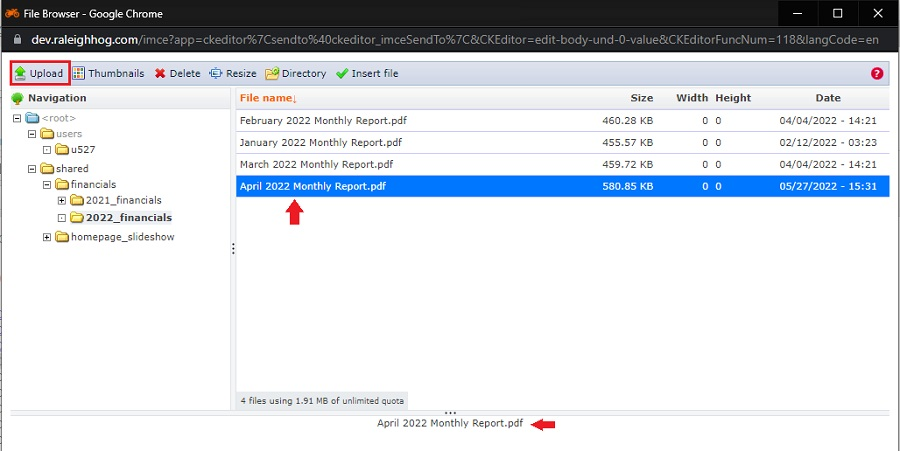
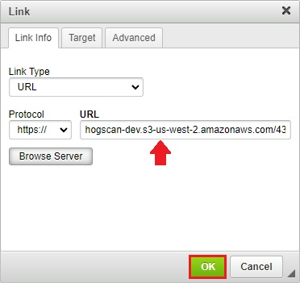
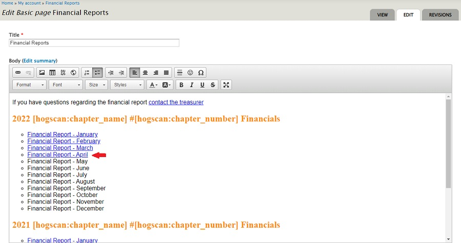

Upload a Financial Report to the Website
General notes, terminology and policies
- There are two environments in which you can work;
- The sandbox environment is where you can test and try things out to familiarize yourself with the steps you will be going through. The sandbox environment starts with dev. Our sandbox environment is https://dev.raleighhog.com
- The production environment is the site that all members see. This is where you make the changes that chapter members see. Our production environment is https://www.raleighhog.com
- Please note that prior to doing anything in the production environment you can test in the sandbox environment first. This environment is used for testing and is not seen by members.
- Your login credentials are the same for both environments
- Your webmaster will help with any questions you may have
Upload a Financial Report
- Login to your account on raleighhog.com
- Navigate to the Financial Reports page
- Hover the mouse pointer (do not click) over "My Account"
- When the dropdown appears click "Financial Reports"
- Click the Edit tab. See image below 
- Double click on the title to highlight the report you want to add (April will be used as an example for this tutorial) and then click the link icon in the Body toolbar (outlined in the image). See image below 
- Upload the financial report PDF file on your local machine to the server as follows
- In the pop-up window that opens click the Browse Server button. See image below 
- Click on the shared directory to expand it, then click the financials subdirectory to expand it and then click the 2022_financials subdirectory to expand it. Click the directory name, then click Upload from the toolbar. See image below 
- Click the Choose File button and select from your machine the PDF file you want to upload. (This file will be in whichever directory you placed it.) When the file finishes loading click the Upload button. Click the x in the upper right to close the window. See image below 
- The PDF has been successfully uploaded to the server
- In the list of files, double click on the file you just uploaded to select it, then click the Upload icon in the toolbar. See image below 
- The URL path has been filled in for you. Click the OK button. See image below 
- The Financial Report is now a link to the PDF you just successfully uploaded. See image below 
- Scroll to the bottom of the page and click the Save button
- You're done. The current month's Financial Report is available/viewable by chapter members.